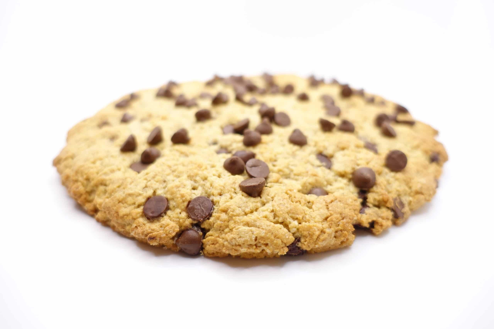

La recette du cookie
Recette pour 2 personnes

Liste des ingrédients
- 1 Oeuf
- 85g de beurre doux
- 100g de pépites de chocolat
- 1càc de levure chimique
- 85g de sucre
- 150g de farine
- 1 sachet de sucre vanillé
- 1 càc de sel
Préparation
- Laissez ramollir le beurre à température ambiante. Dans un saladier, malaxez-le avec le sucre.
- Ajoutez l'oeuf et éventuellement le sucre vanillé
- Versez progressivement la farine, la levure chimique, le sel et les pépites de chocolat. Mélangez bien.
- Beurrez une plaque allant au four ou recouvrez-la d'une plaque de silicone. À l'aide de deux cuillères à
soupe ou simplement avec les mains, formez des noix de pâte en les espaçant car elles s'étaleront à la
cuisson.
- Faites cuire 8 à 10 minutes à 180°C soit thermostat 6. Il faut les sortir dès que les contours
commencent à brunir.